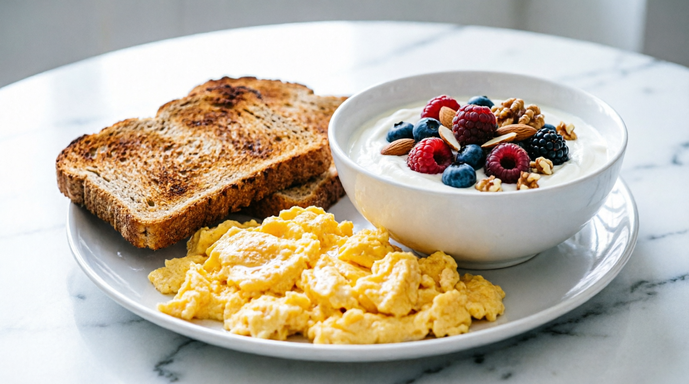

Conseils basés sur la science et tests honnêtes des meilleurs compléments pour une vie plus saine.
Voir nos Avis 2026Notre analyse honnête des compléments les plus populaires du moment
Envies fréquentes d'uriner la nuit ? Notre analyse de cette formule naturelle pour hommes 50+.
Lire notre avis complet →La science du microbiote oral pour les gencives et l'haleine. Que vaut-il vraiment ?
Lire notre avis complet →Fuites et envies pressantes : les solutions naturelles et notre test de la formule FemiCore.
Lire notre avis complet →Tous nos conseils santé, nutrition et tests produits
Sifflements et bourdonnements : que vaut cette solution naturelle pour apaiser le nerf auditif ?
Lire l'avis →Le programme audio qui fait fureur pour soutenir la mémoire. Vraie piste ou gadget ?
Lire l'avis →16/8, 5:2 : ce que dit vraiment la science et comment bien débuter sans se tromper.
Lire la suite →EGCG, caféine, métabolisme : on décrypte ce que dit vraiment la science sur la perte de poids.
Lire la suite →Calories, glycémie, NEAT : voici ce que change vraiment la marche quotidienne pour votre corps.
Lire la suite →
Faim à 11h ? Le problème n'est pas votre volonté mais votre petit-déjeuner. La solution.
Lire la suite →Hormone de croissance, récupération : découvrez pourquoi vos nuits décident de vos résultats.
Lire la suite →
Et si ton café du matin pouvait faire plus que te réveiller ? La science du métabolisme.
Lire la suite →Notre comparatif complet pour la maison : critères, avis et meilleurs rapports qualité/prix.
Lire la suite →
Concentrée, isolate ou native ? Notre guide et top 3 des meilleures protéines.
Lire la suite →
Genoux, épaules : pourquoi ils grincent et les réflexes pour les protéger.
Lire la suite →